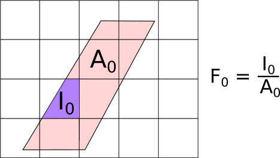
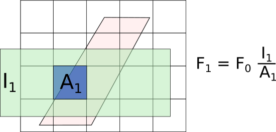

Fractional Rebinning (RebinnedOutput Workspaces)#
In some instances of rebinning data, the information of the counts in the bins prior rebinning should be preserved in the output of rebinning in some way. This is because some algorithms depend on how the original data was treated. We achieve this by storing a weight for each bin that corresponds to the fraction between the area of the output bin and the area of the input bin (i.e. prior to rebinning). This kind of Workspace2D that contains information of the areas used during rebinning is called a RebinnedOutput. Some algorithms, such as SofQWNormalisedPolygon and ConvertToReflectometryQ, create this special type of Workspace2D workspace in which each bin contains both a value and the fractional overlap area of this bin over that of the original data. This fractional overlap area value is referred to as a fractional weight, since it has the role of controlling the proportion of the counts in output bins that underwent some coordinate transformation.
To illustrate why using these fractional weights is necessary we explain how rebinning works through the technique of NormalisedPolygon.
NormalisedPolygon Technique#
NormalisedPolygon is the technique used by SofQWNormalisedPolygon algorithm and it performs a coordinate transformation (from scattering angle theta to momentum transfer Q) followed by the (fractional) rebinning in the new coordinate system.
The fractional rebinning is not unique to this technique, as it could be applied even if there was no coordinate transformation (this is what Rebin2D does). However, while in Rebin2D the input and output grid lines are parallel to each other (no coordinate transformation), the input and output grid lines for NormalisedPolygon are not parallel, resulting in parallelpiped output bins. The algorithm constructs the polygon using the boundaries of the input bin and transforming that polygon into the output coordinates. In the output coordinates, we look for the intersections between the transformed input bin and the output bin:

As shown in the figure, the input bin (pink-shaded parallelopiped) has been transformed to the output bin coordinates and so is not parallel to the output grid. This means the output bins will only ever partially overlap the input data. The resulting value of the output bin is proportional to the overlap between the purple area \(I_0\) and the pink-shaded area \(A_0\). In the general case where each output bin intersects several input bins, the signal \(Y\) and errors \(E\) in the new bins are calculated as:
And the fractional weight of the new bin is stored as the sum of all the weights with intersecting input areas:
The output data will be a workspace with type: RebinnedOutput, which means that it is a Workspace2D with the information of the weigthts on the bins. To see why this is needed, consider the case where another rebin is perfomed after the previous rebinning. This time the output bin sits on a larger grid:

If the fractional weight of the initial rebin were not stored, this rebin operation would have \(F_0=1\), and the resulting weight \(F_1\) would be overestimated. In other words, if the fractional weights are not chained as shown, then the area shaded in a lighter blue under \(A_1\) (where originally there was no data) would be included in the weights, which would lead to an overestimate of the actual weights, and ultimately to an overestimate of the signal and error.
Rebin2D on RebinnedOutput workspaces#
As mentioned before, the distinction between Fractional Rebinning and normal Rebinning lies in the storage of the fractional weights relative to the original data.
RebinnedOutput workspaces have the fractional weight resulting from previous rebins stored for each input bin. When Rebin2D v1 is called on RebinnedOutput workspaces, the argument UseFractionalArea is always automatically turned on, to ensure the weight fractions are always propagated accross several rebins and that the best possible signal and error estimates are achieved.
When Rebin2D v1 is called on a Workspace2D workspace, by default the argument
UseFractionalArea is set to False, and no fractional weights relative to the original bins are used.
This is consistent with the original implementation of the algorithm, but can cause issues when
used on certain types of workspaces. Take for example a ToF-scattering angle workspace from an
instrument with two sets of detectors at similar scattering angles:
import numpy as np
sample_ws = CreateSampleWorkspace()
theta_tof = ConvertSpectrumAxis(sample_ws, "theta")
theta_tof_fa_false = Rebin2D(theta_tof, '100,400,20000', '0, 0.004, 1', UseFractionalArea=False)
theta_tof_fa_true = Rebin2D(theta_tof, '100,400,20000', '0, 0.004, 1', UseFractionalArea=True)
By default CreateSampleWorkspace v1 uses the “basic_rect” instrument which has two
detectors around the straight-through beam direction: one at 5m and one at 10m. You can see this
if you right click on the sample_ws workspace and select “Instrument View”.
When this workspace is converted to scattering angle (theta), the pixels on the 5m and 10m
detectors will overlap because they have similar theta values. You can see this by right clicking
the workspace and select “Show Data” and look along the row labels - you should see several labels
repeated and others at non-uniform gaps.
The theta_tof workspace thus has non-uniform bins in the theta axis, and if you use
Rebin2D v1 with UseFractionalArea=False these bins will not be correctly normalised.
To see this, plot the workspaces theta_tof, theta_tof_fa_false and theta_tof_fa_true using the
SliceViewer. You will see that theta_tof_fa_false looks distinctly different with random intensity spots
whilst theta_tof and theta_tof_fa_true looks similar with only a single ToF peak.
We would thus recommend to always use UseFractionalArea=True with Rebin2D v1.
One final consideration is that RebinnedOutput workspaces are always treated as distributions. That is, the output counts and uncertainties are always renormalised by the fractional weights:
If this is not done, then the output will look similarly to the case with UseFractionalArea=False with
random intensity spots. This means that internally the RebinnedOutput workspace stores
\(Y^{\mathrm{new}}\) and \(F^{\mathrm{new}}\) but when you plot the data,
or use “Show Data”, you will get \(Y^{\mathrm{output}}\).
Thus if you view the data of theta_tof_fa_true you will see that the values generally match that of
theta_tof whereas the data values of theta_tof_fa_false will be a factor of approximately 1/3 that of
theta_tof due to the new bin size being twice as large in the ToF axis and 1.5 times as large in the theta
axis.
Integration on RebinnedOutput workspaces#
The Integration v1 algorithm operates differently on RebinnedOutput workspaces and Workspace2D workspaces. For Workspace2D workspaces, the integrated counts per spectra is simply the sum of the counts in the bins within the Integration range:
In the case of RebinnedOutput, we take into the accout the fractional area weights \(F_i\):
where \(Y_i\) and \(F_i\) are the values and fractions for the \(i^{\mathrm{th}}\)
bin and \(n\) is the number of bins in the range which is not NaN.
We can check that the factor \(1/n\) is needed by looking at the special case where the fractional
weights are all set to \(F_i = 1\). In this case, the result of the integral yields
\(\sum_i Y_i\), which is what we expect for an integral over bins with no fractional area weights.
Notes#
Tip
For correct handling of the fractional weights in rebinning, the user is recommended to use the Rebin2D v1 algorithm in preference to Integration v1 or SumSpectra v1 although the other algorithms do account for the fractional weights.
Warning
All binary and unary operations on workspaces will ignore the fractional weights. Thus it is important to handle all background subtractions and scaling in the original reduced dataset(s) before conversion using SofQWNormalisedPolygon v1.
Category: Concepts